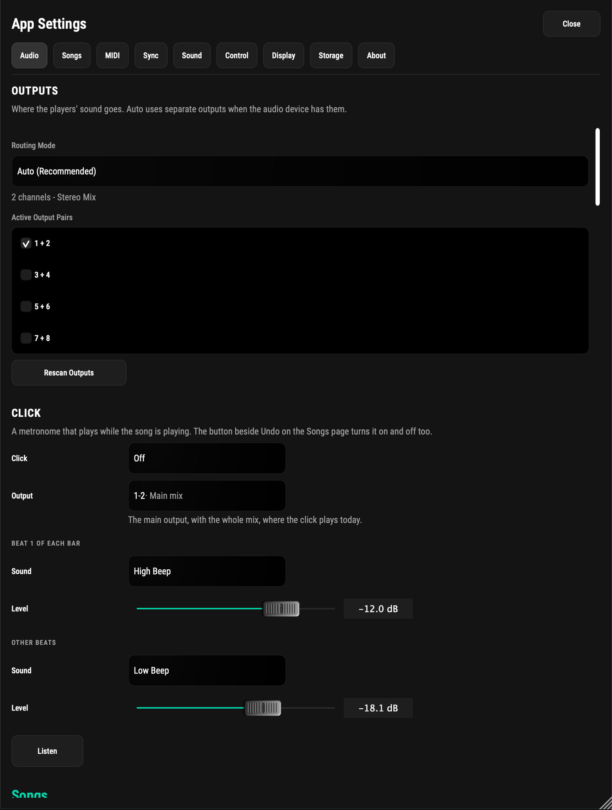

← All chapters · Larry Seyer Drums
Chapter 12 · Beta tester guide
Using the Plug-in in a Host
Temporary quick-start for TestFlight testers until the tutorial videos are ready.
What this beta gives you
In this TestFlight build, the plug-in is the AUv3 that comes with the app.
- On Mac, hosts see the AUv3 after you have opened the app once.
- On iPhone and iPad, the same app is both the standalone instrument and the AUv3.
VST3, CLAP and the installer AU plug-in are not in this TestFlight build. If your usual host is expecting one of those formats, use a host that loads AUv3, or use the standalone app.
Hosts list the plug-in as an instrument. Logic Pro files Audio Units under the maker name Automagic Art (that’s my company name). Look for Larry Seyer Drums there.
Screenshot needed: A host’s plug-in list showing Larry Seyer Drums under Automagic Art, with the format (AUv3) visible. Note the host and version when the shot is taken.
What changes inside a host
The editor is the same full app: the top bar, all four pages, and the transport. A few things are different:
- The host owns the audio device and MIDI routing, so there is no audio-device page and no “Larry Seyer Drums IN/OUT” ports.
- There’s a fifth clock source, HOST. Host Sync is the default in a plug-in: play, stop, position and tempo all come from the host. The sync source belongs to the device, not the project, so each plug-in instance opens on the source you last chose in a plug-in.
- Keyboard shortcuts work once you click in the plug-in window. Some hosts need their “send all keys to the plug-in” option turned on.
- There are no host automation lanes, by design. Control the app from MIDI on a track instead (fills, lifts, mute/solo, Program Change, and MIDI Learn on mixer faders).
Saving: Larry Seyer Drums remembers your songs, and your recording program remembers which song. The project stores the song’s bank and slot, plus a safety copy. Larry Seyer Drums’ own Save is still what makes an edit permanent. A new instance starts from the shared working session.
Logic Pro and GarageBand run plug-ins in a sandbox. In those hosts, Larry Seyer Drums keeps its own working session. Songs, kits and presets are shared as normal.
Three ways to work
You can use as much or as little of the app’s own song side as you want.
1. As a drum sound module. Your host’s MIDI plays Larry Seyer Drums’ kits.
- Start a New Song with no pills. With no pill, the app plays nothing on its own.
- Set MIDI Input Layout to GM (or EX, if that’s what you’re sending). Check it; older settings may still open on EX.
- Each player listens on its own channel (Player 1 on 1 through Player 4 on 4 by default), so four tracks can play four kits.
- The control channel and the Program Change channel (both 16 by default) never play drums.
2. Using Larry Seyer Drums’ own Songs, following the host.
- Leave Host Sync on. Pills, energy, fills and lifts play in time with the host, from any bar, at the host’s tempo.
3. Both. Larry Seyer Drums writes the part, and the host keeps it — by recording the plug-in’s MIDI output, or by exporting or dragging a MIDI file onto a track, then playing that track back as a sound module. Set Input Layout to match the file: EX for EX, GM for GM.
You can also mix the ways: for example, a Pretty Shuffle song on Player 1, with extra crash accents coming from a MIDI track on the same channel.
A simple worked example: draw a short two-bar groove in the host (kick, snare, hats, a crash, a small tom fill), play it through Player 1 in stereo, then set up multi-out and listen to the drums on separate tracks.
Stereo and multi-out
A plug-in does not invent outputs. The host learns the output list when it loads the plug-in, and it enables the pairs it will actually read. You turn on more outputs in the host, which then prepares the plug-in again.
Once those pairs are enabled:
- Auto is meant to use the host’s enabled outputs, and to stay on the main stereo pair when the host hasn’t enabled more. In this beta, Auto in a plug-in still stays on the main pair even if the host has enabled more outputs. For separate outputs in this beta, use Force Multi-Out.
- Force Multi-Out uses the enabled outputs.
- Force Stereo is always the main pair.
Rescan Outputs is a standalone-app button. It asks the audio device again. It is not a plug-in step — except for one current-build workaround below.
On a Mac plug-in, today
The intended behaviour is that Force Multi-Out starts using the enabled outputs the moment you pick it. In the current build, a plug-in that’s already running may stay on the stereo mix after you choose Force Multi-Out.
Until that is fixed: choose Force Multi-Out, then press Rescan Outputs, or reload the plug-in in the host. If Force Multi-Out was already saved when the plug-in loaded, it should use the enabled pairs from the start.
On iPhone and iPad
On the iPhone and iPad AUv3, the host only learns the output list at load. Force Multi-Out takes effect the next time the host loads the plug-in. Reload it. Rescan Outputs does not change the list here.
Stereo is the default on iPhone and iPad. AUM can route the extra outputs. GarageBand is expected to stay stereo only.
Output names in the host are defaults, not fixed destinations. Drum strips default to their own pair. FX returns default to the main pair, so assign them if you want them on their own tracks. All four players’ kicks sum on one pair, so per-drum multi-out does not, by itself, give each player its own kick track.
On a per-drum route, each strip’s own processing is included, and the player volume is applied, but the sound bypasses the player bus and master processing.

Screenshot needed (optional, live host): A host mixer after multi-out is enabled, with kick, snare and hats arriving on separate tracks. Note the host, version, and whether Rescan Outputs or a reload was needed.
The AUv3 on iPhone and iPad
A Mac or desktop host opens the full Larry Seyer Drums pages in the plug-in window, not Quick Pick. The compact window below is what you get on iPhone and iPad.
Load Larry Seyer Drums as an instrument in a host such as GarageBand or AUM. The README also names Quantiloop Pro and Loopy Pro. After an install, reload the host slot: switch away, let it load, then switch back.
The plug-in window itself is Quick Pick — the twenty buttons, sized to the host’s window — plus Open full Larry Seyer Drums and a status line that says Playing or Editing in Larry Seyer Drums. There is no Play button in that window. The host’s transport runs it, with Host Sync by default.
Open full Larry Seyer Drums attaches the app to the playing AUv3, and the app shows “Editing in host” with the bank and slot. If that doesn’t appear, there’s a “Tap to edit in Larry Seyer Drums” notification, or you can open the app by hand when notifications are off. Show yourself the way back to the host before you’re in the middle of a session.
Saving: the host’s Save also writes the current Song into its bank slot, with three exceptions. After a Quick Pick choice it writes nothing until a slot is loaded or saved again; a locked slot is left alone; and a song that never came from a slot (unslotted) writes nothing.
The AUv3 can’t present file pickers, so import and export of files happen in the standalone app.
The AUv3 shares the device with the host and any other plug-ins, and it makes the same power check as the app. Extra SeyerComps may fall back to Simple Comp, and tape and extra reverbs may be held back. Keep effects light on iPhone. The Quick Pick plug-in window has no load meter, so use the host’s CPU display if it has one, or open the full app and watch the meter there.
Attached editing and recording on iOS are still being retested. If “Open full Larry Seyer Drums” or recording into a pill while attached misbehaves, that’s a high-value report.
Previous: Tempo, Sync and MIDI · Index · Next: iPhone and iPad